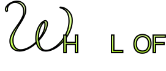

A 총 5단계의 스테이지를 통해 타이타닉 침몰을 막아야 합니다.
B 각 스테이지마다 메이저 아르키나 22장 중 4-5장이 등장합니다.
C 랜덤 선택 된 카드별로 카드 선택에 맞는 행동 선택지가 등장합니다.
D 행동을 선택 시 그에 상응하는 결과를 확인할 수 있습니다.
E 타로카드 여정을 통해 최종 엔딩에 도달합니다.
A 눈을 감고 심호흡 후 내면의 나에게 집중한다.
B 구체적이고 명확한 질문을 마음 속으로 떠올린다.
C 메이저 아르키나 카드 22장을 셔플 후 직감을 통해 카드를 선택한다.
D 뽑은 타로카드의 해석에 자신의 질문을 대입하고 다양한 해석을 읽어본다.